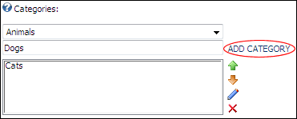

Adding a Repository Category
How to add a category to the Repository module.
-
- Select the Repository Settings tab.
- At the Categories drop down list, select root to create a parent category, or select an existing category to create a child category.
- In the Categories text box, enter a name for the new category.
- Click the ADD CATEGORY link.
- Repeat Steps 3-5 to add additional categories.
Tip: You do not need to click the Update link to save these changes.

Adding a Category